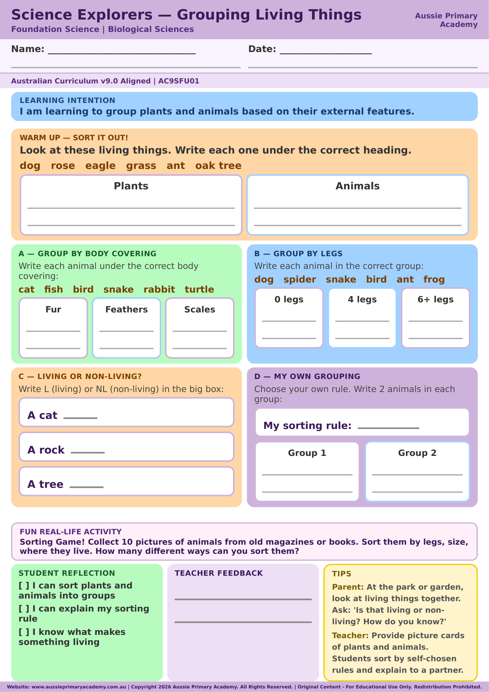

Foundation · Science · Free Printable
Grouping Living Things
Sort and group living and non-living things based on observable features.
Worksheet Preview

Learning Intention
Students sort and group living and non-living things based on observable features.
Australian Curriculum
Supports Foundation Science learning. (AC9SFU01)
Teacher Notes
Use picture cards to sort into living and non-living groups as a class activity first.
Skills Practised
- Sorting and grouping
- Living vs non-living
- Observable features
About This Worksheet
This Foundation Science activity helps children sort and group things using observable features. Sorting gives young learners a simple way to notice similarities and differences and explain why an item belongs in a group.
I Can Checklist
- I can sort things into groups.
- I can describe a feature I used for sorting.
- I can explain why an item belongs in a group.
How to Use It
Start with picture cards or familiar objects. Ask children to make a group and explain the rule they used. Compare the groups and discuss whether an item could fit somewhere else. Then use the worksheet to record the classification.
Parent Tip
Sort everyday objects such as toys, leaves or kitchen items. Ask your child to choose the sorting rule rather than giving them one. This encourages observation, language and early scientific thinking.